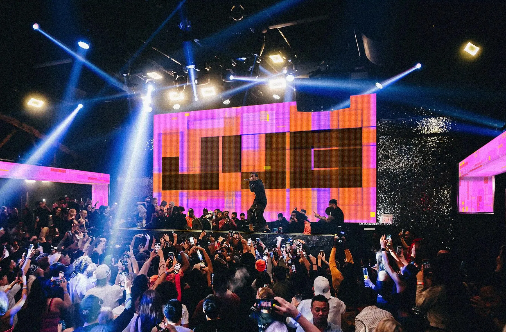
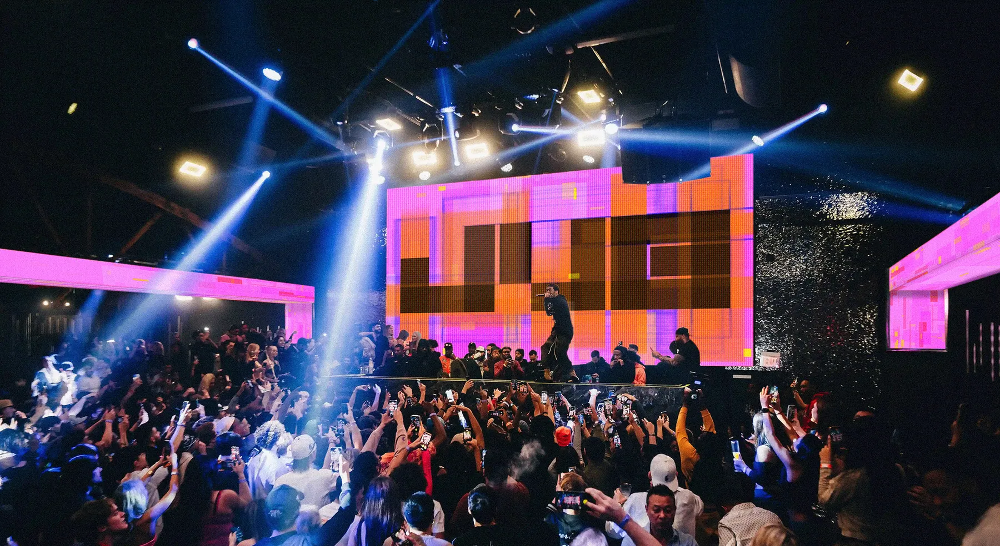
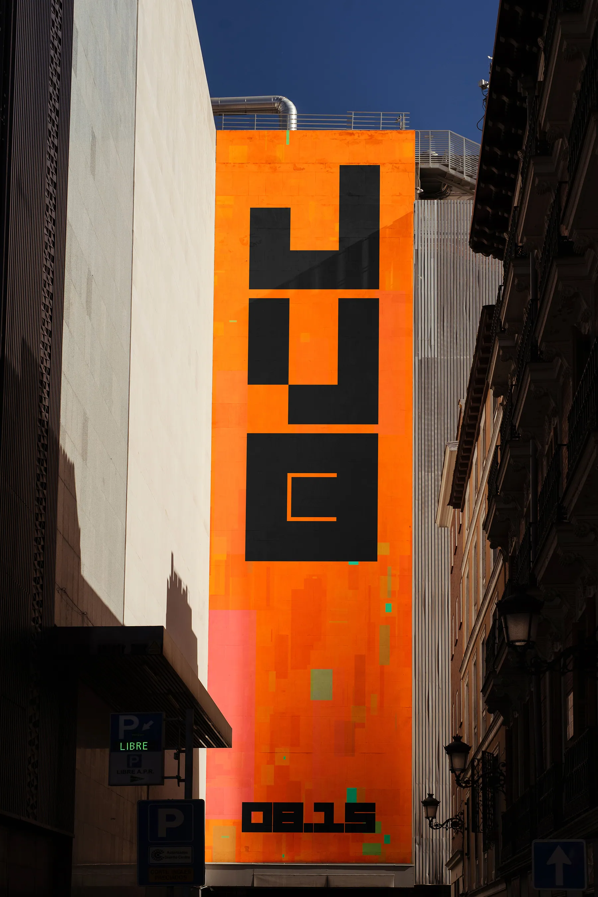
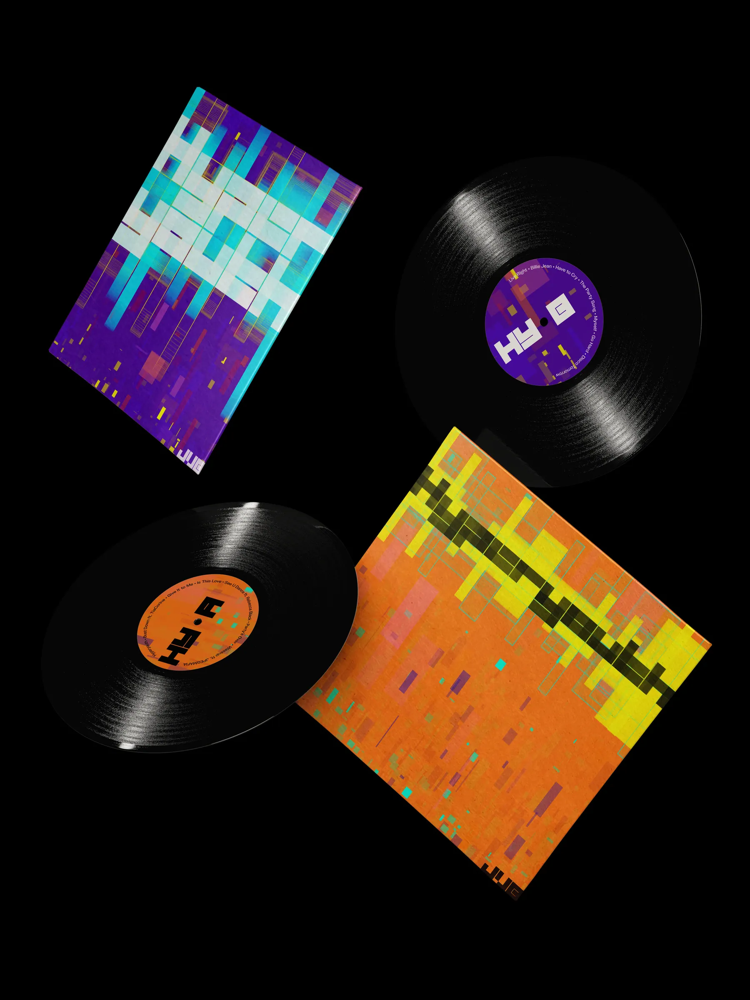

Hyperyouth
Initially starting as a way of learning generative design I took an album from rap duo Joey Valence & Brae and created a creative identity for its release. Hyperyouth is an introspective album at large but it still lets the duo's fun and goofy side shine at times.




Built in p5.js, using wave functions, randomness, and real-time audio-reactive input, the design translates the record's sample-heavy chaos and youthful energy into an evolving, interactive visual language.